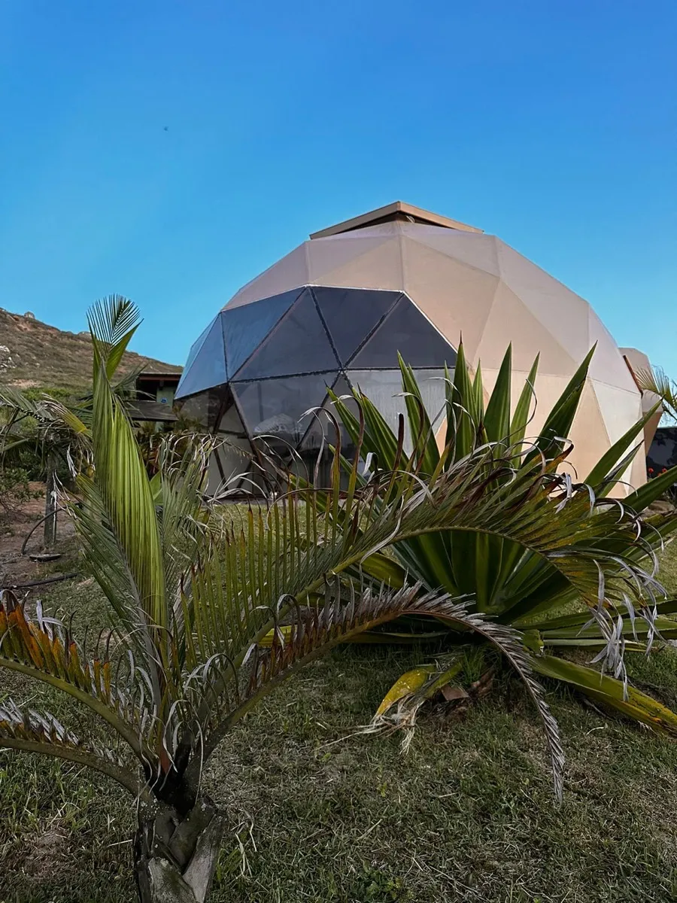

Domo
A grande novidade da pousada: um domo geodésico moderno, de frente para o mar.
Ver detalhesO Domo é a grande novidade da pousada. Uma acomodação totalmente diferenciada, construída nos padrões arquitetônicos dos domos geodésicos modernos.
- Banheira de hidromassagem
- Ar-condicionado
- Deck com churrasqueira
- Wi-Fi
- TV
- Frigobar
- Ducha
- Cozinha
- Roupa de cama e toalhas
- Cesta de café da manhã